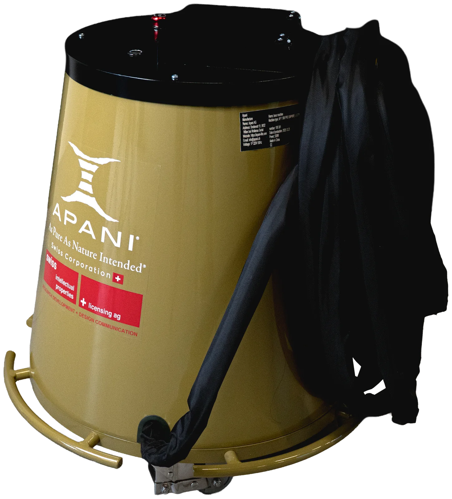

Spezialreinigung mit Laser
Für Aufgaben, bei denen Hochdruck, Strahlmittel oder Chemie zu grob sind: Der Laser trägt Russ, Graffiti, Krusten und Rückstände Schicht für Schicht ab — trocken, ohne Wasser und ohne Strahlgut, das danach entsorgt werden muss.

Wenn klassische Reinigungsverfahren an ihre Grenzen kommen
Spezialreinigung beginnt dort, wo der normale Unterhalt aufhört: nach einem Brand, wenn Russ an Balken, Putz und Mauerwerk haftet; an historischen Fassaden mit schwarzen Krusten; bei Graffiti auf porösem Naturstein; an Formen und Anlagen, auf denen sich Trennmittel und Produktreste festgesetzt haben. In all diesen Fällen geht es nicht nur darum, dass es sauber wird — sondern darum, dass der Untergrund dabei keinen Schaden nimmt.
Die bewährten Verfahren haben dabei jeweils ihren Haken. Hochdruck und Nassreinigung bringen Wasser in Holz, Putz und Fugen, das danach wieder austrocknen muss. Sand- oder Glasperlenstrahlen raut Oberflächen auf und erzeugt Strahlgut, das zusammen mit dem Schmutz entsorgt werden muss. Trockeneis arbeitet zwar ohne Rückstände, braucht aber laufend Nachschub an Pellets und ist sehr laut. Chemische Reiniger hinterlassen Rückstände und können Farbe oder Schmutz tiefer in poröse Materialien treiben.
Der Reinigungslaser geht einen anderen Weg. Dunkle Schichten wie Russ, Farbe oder Krusten nehmen die Energie der kurzen Laserpulse auf und lösen sich, während der meist hellere Untergrund einen grossen Teil des Lichts reflektiert. Über Leistung und Anzahl der Durchgänge lässt sich steuern, wie viel abgetragen wird — bis hin zur Entfernung einzelner Schichten. Die Oberfläche bleibt trocken, es muss nichts trocknen, und als Rückstand fällt nur Staub bzw. Rauch an, der direkt abgesaugt wird.
Ehrlich gesagt ist der Laser nicht für jede Aufgabe die wirtschaftlichste Lösung: Grosse, robuste Flächen ohne empfindlichen Untergrund lassen sich mit klassischen Verfahren oft schneller reinigen. Seine Stärken spielt der Laser dort aus, wo Substanz erhalten bleiben muss, wo Wasser schadet, wo präzise gearbeitet werden muss oder wo das Abdecken und Aufräumen beim Strahlen mehr Zeit kostet als die Reinigung selbst.
Russ, Krusten und Graffiti — Vorher und Nachher
Drei typische Aufgaben aus der Spezialreinigung und wie sich der Laser im Vergleich zu klassischen Verfahren schlägt.
Russ nach Brandschäden — Holz, Fachwerk und Putz
Nach einem Brand sitzt Russ tief in der Struktur von Balken und auf Putzflächen. Der Laser entfernt die Russschicht, ohne die Holzoberfläche abzuschleifen oder aufzurauen, und ohne Wasser, das in das Holz eindringt. Je nach Holzart und Beschichtung werden die Parameter angepasst — darum gehört eine Probefläche am Anfang jeder Sanierung dazu.
Symbolbild — Ziehen Sie den Regler, um Vorher und Nachher zu vergleichen.
Krusten und Verschmutzungen an Naturstein-Fassaden
In der Restaurierung wird die Laserreinigung seit Jahren für Stein eingesetzt, weil sie schwarze Krusten und Schmutzfilme schichtweise abträgt und feine Ornamente erhält. Bei geschützten Objekten erfolgt die Reinigung immer in Absprache mit der Denkmalpflege und nach einer Probefläche, denn einzelne Gesteine können auf die Laserbehandlung mit leichten Farbveränderungen reagieren.
Symbolbild — Ziehen Sie den Regler, um Vorher und Nachher zu vergleichen.
Graffiti auf Naturstein und Beton
Auf porösem Stein treiben Lösungsmittel die Farbe oft noch tiefer in das Material. Der Laser verdampft die Farbpigmente an der Oberfläche — ohne Chemie und ohne Hochdruck. Wie vollständig ein Graffiti verschwindet, hängt von Farbe, Schichtdicke und Saugfähigkeit des Untergrunds ab; bei tief eingedrungener Farbe können Schatten zurückbleiben.
Symbolbild — Ziehen Sie den Regler, um Vorher und Nachher zu vergleichen.
Laser im Vergleich zu Trockeneis, Strahlen und Nassreinigung
| Kriterium | Trockeneis | Sand- / Glasperlenstrahlen | Hochdruck / Chemie | APANI Laser |
|---|---|---|---|---|
| Wasser im Untergrund | Nein | Nein | Ja, Durchfeuchtung | Nein |
| Verbrauchsmaterial | Trockeneis-Pellets | Strahlmittel | Wasser, Reiniger | Keines |
| Abfall nach der Reinigung | Nur Schmutz | Strahlgut + Schmutz | Schmutzwasser, Chemie | Nur Filterrückstände |
| Abtrag am Untergrund | Gering | Raut auf | Je nach Druck | Steuerbar, schichtweise |
| Lärm & Abdecken | Sehr laut | Aufwendiges Abdecken | Spritzwasser | Absaugung, Arbeitsbereich abgrenzen |
| Grosse, robuste Flächen | Schnell | Schnell | Schnell | Langsamer — hier oft klassisch |
So läuft eine Spezialreinigung mit dem Laser ab
1. Probefläche anlegen
An einer unauffälligen Stelle werden Leistung und Durchgänge auf Schicht und Untergrund abgestimmt — bei Holz, Naturstein und Denkmälern unverzichtbar.
2. Schichtweise abtragen
Die Fläche wird Bahn für Bahn gereinigt, der entstehende Rauch und Staub direkt abgesaugt. Der Arbeitsbereich wird abgegrenzt.
3. Kontrollieren und weiterarbeiten
Die Oberfläche ist trocken. Anstrich, Versiegelung oder Imprägnierung können ohne Trocknungszeit folgen.
Einsatzbereiche der Laser-Spezialreinigung
Für Sanierungsfirmen, Spezialreiniger, Restauratoren und die Instandhaltung in der Industrie.
Auch in der Industrie ist der Laser ein Werkzeug der Spezialreinigung: Gummi-, Kunststoff- und Gussformen lassen sich von Trennmitteln und Produktresten befreien, oft im eingebauten und sogar warmen Zustand — ohne Demontage und ohne die Profilkanten zu verschleissen. Grenzen gibt es bei tiefen Hinterschneidungen, kleinen tiefen Bohrungen und sehr dicken, festsitzenden Rückständen. An Maschinen und Anlagen entfernt der Laser Öl, Fett, Kleber- und Dichtmassereste gezielt dort, wo es nötig ist.
Welcher APANI Laser passt zu Ihrer Spezialreinigung?
Wie schnell eine Fläche sauber wird, hängt bei Russ, Krusten und Graffiti stark von Schicht und Untergrund ab — feste Flächenangaben wären hier nicht seriös. Für feine Arbeiten an Holz, Ornamenten und Formen eignet sich der AP300, für grössere Flächen der leistungsstärkere AP500.

AP300
Laser-Reinigungssystem- Für Detailarbeit, Holz und Denkmalpflege
- Fein steuerbarer Abtrag
- Kompakt und mobil
- 230 V Plug & Play

AP500
Laser-Reinigungssystem- Für grössere Flächen und Fassaden
- Mehr Leistung pro Stunde
- Benötigt bauseitigen Kompressor
- 230 V Plug & Play
Erst sehen, dann entscheiden
APANI begleitet Sie vom ersten Test bis zum Service — direkt aus der Schweiz.
Live-Präsentation
Die Präsentation findet bei unserem Partner Carrosserie & Spritzwerk Marty in Wangen SZ statt.
Testgerät & Leasing
Testen Sie den Laser im eigenen Betrieb oder verteilen Sie die Investition über Leasing. Preise und Konditionen erhalten Sie auf Anfrage.
Einschulung inklusive
Bei der Lieferung schulen wir Ihr Team direkt am Gerät — Bedienung, Parameter und sicheres Arbeiten.
230 V Plug & Play
Normale Steckdose, kein Wasseranschluss, keine Kabine. Der Laser ist sofort dort einsatzbereit, wo die Arbeit anfällt.
2 Jahre Garantie
Alle APANI Laser kommen mit zwei Jahren Garantie — für einen sorgenfreien Einstieg in die Lasertechnik.
Service in der Schweiz
Wartung und Service übernimmt APANI selbst in der Schweiz — ohne Umwege über ausländische Servicestellen.
Häufige Fragen
Kann der Laser Russ von Holz entfernen, ohne das Holz zu beschädigen?
+Ja, bei passend eingestellten Parametern. Der Laser trägt die Russschicht ab, ohne die Holzoberfläche abzuschleifen, und das Holz bleibt trocken. Weil Holzarten und Beschichtungen unterschiedlich reagieren, beginnt jede Arbeit mit einer Probefläche.
Ist die Laserreinigung für denkmalgeschützte Fassaden geeignet?
+Die Laserreinigung wird in der Restaurierung seit Jahren eingesetzt, weil sie Krusten schichtweise und kontrolliert abträgt. Bei geschützten Objekten arbeiten Sie immer in Absprache mit der Denkmalpflege und legen zuerst eine Probefläche an, da einzelne Gesteine mit leichten Farbveränderungen reagieren können.
Entfernt der Laser jedes Graffiti vollständig?
+Das hängt von Farbe, Schichtdicke und Saugfähigkeit des Untergrunds ab. Auf Naturstein und Beton sind die Ergebnisse meist sehr gut. Ist die Farbe tief in den Stein eingedrungen, können Schatten zurückbleiben — eine Probefläche zeigt, was möglich ist.
Wann sind Trockeneis oder Strahlen wirtschaftlicher?
+Bei grossen, robusten Flächen ohne empfindlichen Untergrund sind klassische Verfahren oft schneller. Der Laser lohnt sich dort, wo Substanz erhalten bleiben muss, wo kein Wasser eingebracht werden darf, wo präzise gearbeitet wird oder wo Abdecken und Entsorgen beim Strahlen viel Zeit kosten.
Was ist beim Einsatz auf der Baustelle zu beachten?
+Der Arbeitsbereich wird abgegrenzt, alle Personen darin tragen eine geeignete Laserschutzbrille, und Rauch und Staub werden abgesaugt. Beachten Sie die Vorgaben der SUVA zur Lasersicherheit. Bei der Lieferung schulen wir Ihr Team im sicheren Arbeiten.
Kann ich die Spezialreinigung live sehen?
+Ja. Die Live-Präsentation findet bei unserem Partner Carrosserie & Spritzwerk Marty in Wangen SZ statt. Zusätzlich bieten wir ein Testgerät sowie Leasing an.
Weitere Anwendungen: Laser-Rostentfernung · Laser-Lackentfernung · Schweissnaht-Reinigung mit Laser